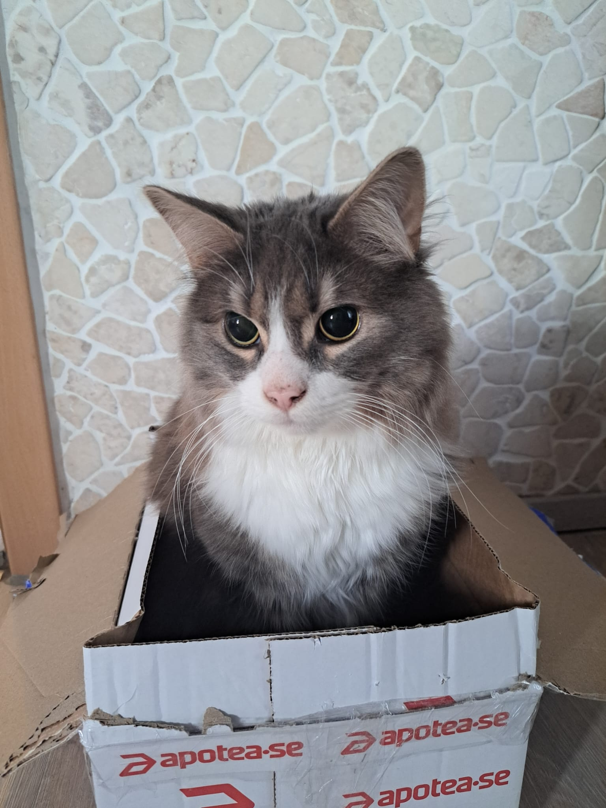
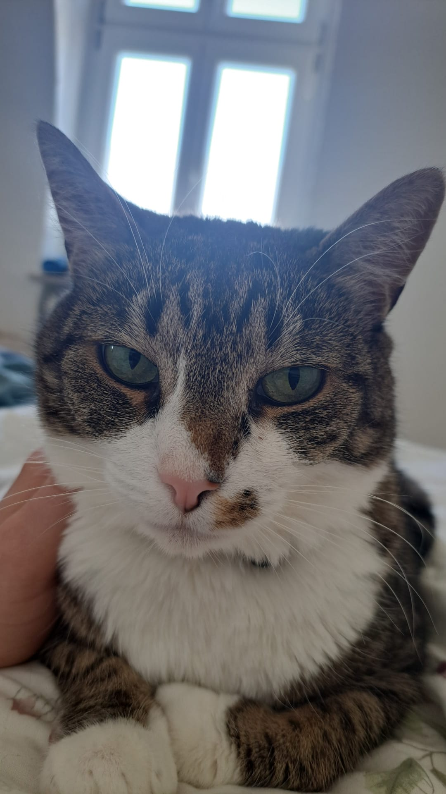

About Me
I'm a researcher and designer who also has two cats, plays D&D, and knows way more about fictional history than is probably useful. This page is for the stuff that doesn't fit on a CV.
I have two cats. Sisu is blind but you wouldn't know it from watching him. His whiskers, paws, and ears compensate so well that he barely seems limited. He reacts to things coming his way, or to approaching something, faster than you'd expect from an animal who can't see what's happening. I still worry about him. The other one, Yuumi, is your standard cat: deeply opinionated, inconsistently affectionate, always sitting somewhere inconvenient.


I play D&D, but more broadly I'm just into fantasy and whatever lore surrounds it. I've spent a lot of hours reading about World of Warcraft, Warhammer (both Fantasy and 40k, though Fantasy is where I'm at currently), Fallout, D&D setting material. On YouTube, Luetin09 is my go-to: 3+ hour deep dives into Warhammer lore that I've watched more than once. That should tell you most of what you need to know.
I also follow Dan Carlin's Hardcore History and The Rest Is History podcast. I like learning about things in a lot of detail from skilled narrators.
I'm also working on some creative writing, medieval fantasy, nothing finished, mostly for myself. It's going.
In gymnasium I did a personal trainer and masseur education. I'm not a fitness professional or anything, I just find how the body works interesting. Muscle memory, how training stress leads to adaptation, why recovery matters.
I remember back in 2015, my final exam was about an aging population and E-Health, guessing that technology would eventually let people manage their health without ever setting foot in a clinic. That curiosity about designing for real human needs, long before I had the vocabulary for it, is kind of where all of this started.